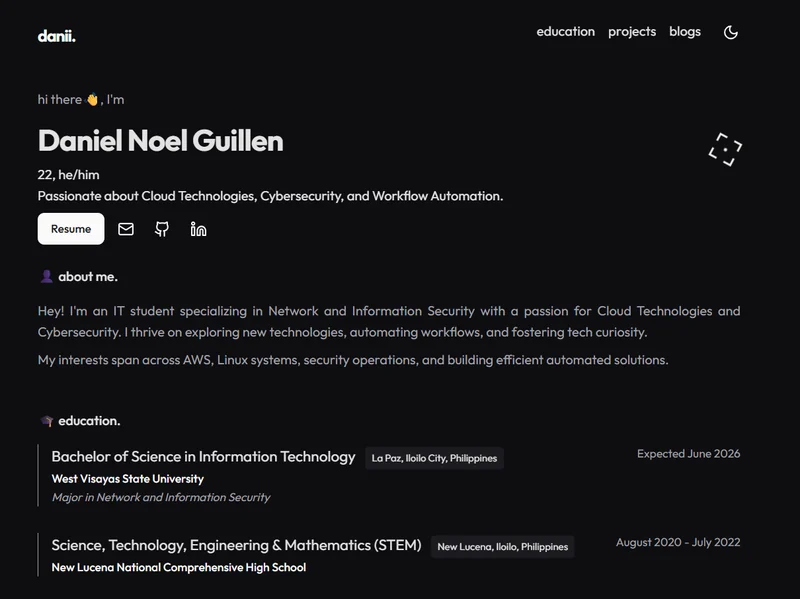

Serverless Cloud Portfolio
A secure, serverless portfolio engineered for repeatable delivery.
Architected a static portfolio on Amazon S3 with CloudFront delivery and IAM least-privilege access. Added a live visitor-counter API with API Gateway, Lambda, and DynamoDB, then automated infrastructure and deployments with Terraform and GitHub Actions.
AWSTerraformS3CloudFrontLambdaDynamoDB